6
Running SignOff Fill
This chapter includes the process of running Virtuoso IPVS SignOff Fill from Virtuoso and generating fill in OA database.
The content of this chapter is organized as follows:
- Running VIPVS SignOff Fill
- Running VIPVS SignOff Fill with Blockages
- Running VIPVS SignOff Fill in Area
Running VIPVS SignOff Fill
After completing the settings in the Snapshot Creator form, you run signoff fill. VIPVS toolbar shows pvs_fill snapshot. The Run VIPVS SignOff Fill icon on the left of snapshot name reflects that selected snapshot is type of Fill.
Figure 6-1 VIPVS signoff fill icon
Perform following steps to run VIPVS signoff fill:
-
Click Run VIPVS SignOff Fill icon. Virtuoso CIW prints message: SignOff Fill is running…. Once fill run is completed, Virtuoso CIW prints message: SignOff Fill is finished successfully and dummy fills are shown on the layout canvas.
Figure 6-2 Run VIPVS SignOff Fill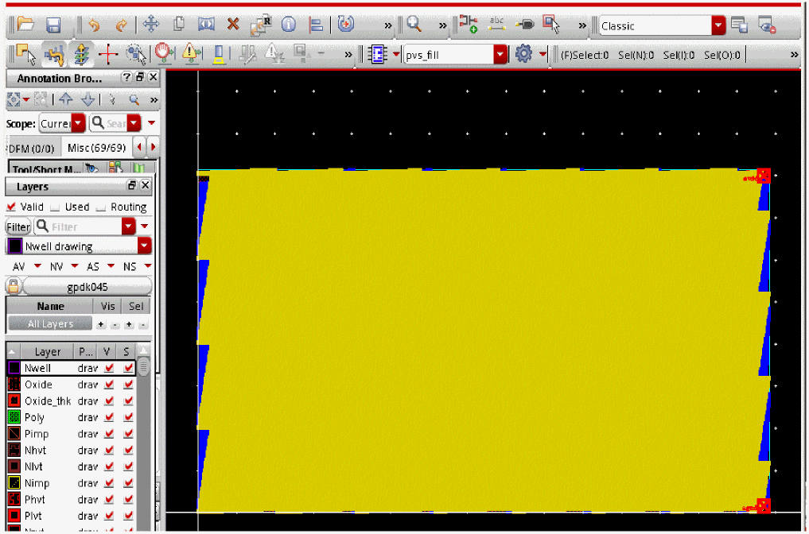The generated fills are inserted as instance. -
The tool by default adds primary prefix pvs_fill and secondary prefix snapshot_name to the name of the cell and puts it to the same library as parent cell. You can change this behavior from the Virtuoso IPVS Run Options form.
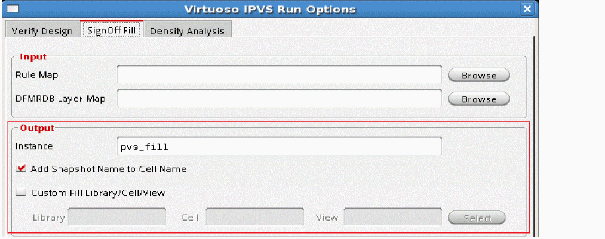
In the steps above, the SignOff Fill was run for all layers. On similar lines, you can run this for active layers, visible layers, custom layers and for specified area by making appropriate selections in the Virtuoso IPVS Run Options form. For more details see, Run Settings for SignOff Fill.
Running VIPVS SignOff Fill with Blockages
In Virtuoso IPVS SignOff Fill flow you can create blockages to avoid dummy fills generation under blockages.
Perform following steps to create dummy fills under blockages:
- Open Virtuoso IPVS Run Options form and go to the SignOff Fill tab.
- Select appropriate run options and click OK.
-
Select blockage layer on Virtuoso Layer Palette and create blockage by drawing a rectangle on the layer that is part of your SignOff Fill run.
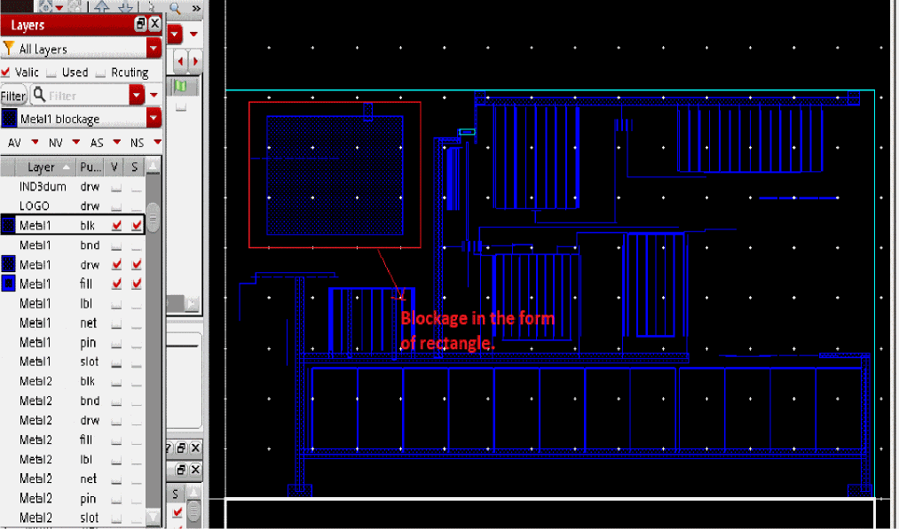 -
Run VIPVS SignOff Fill. Dummy fills are generated except for the area where blockage was created.
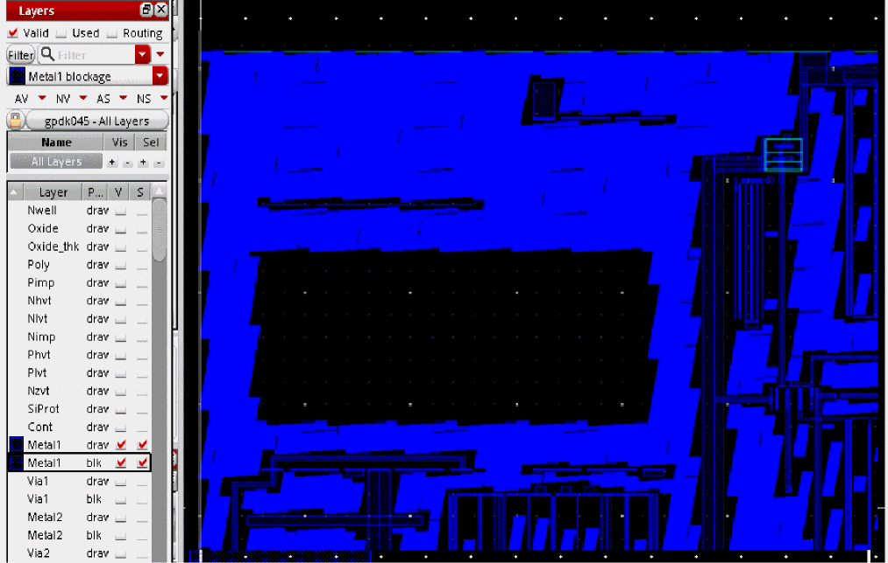
Running VIPVS SignOff Fill in Area
You can generate fills in a specific area and then add more fills incrementally in another area using VIPVS SignOff Fill.
Perform following steps to generate fills incrementally:
- Open the Virtuoso IPVS Run Options form and go to the SignOff Fill tab.
-
Make appropriate selection on layer visibility and in the Run Options block, click the Select button of the Area field.
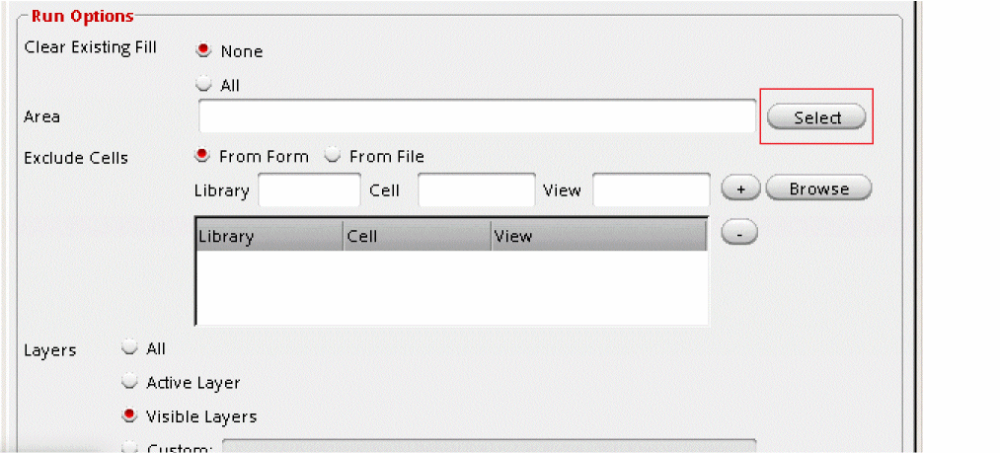 -
On the layout window, create a boundary box as shown below.
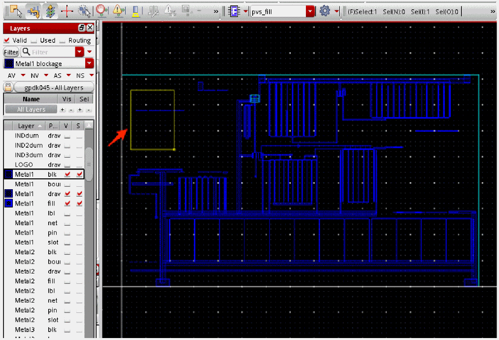The Area field is populated with coordinates of the boundary box.
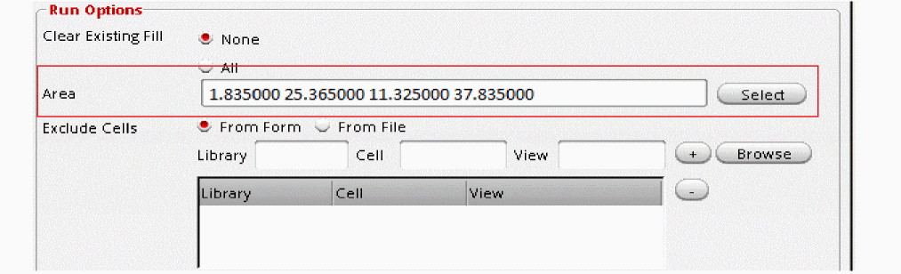 - Click OK to close the form.
-
Run VIPVS SignOff Fill.
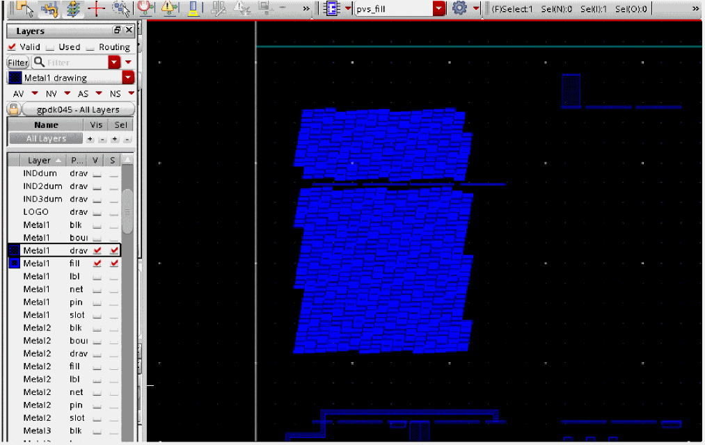Dummy fills are generated for specified area. Dummy fills outside specified area are not generated. - Open the Virtuoso IPVS Run Options form and go to the SignOff Fill tab.
-
On the layout window create boundary box as shown below. Note that new box should partially overlap existing fills.
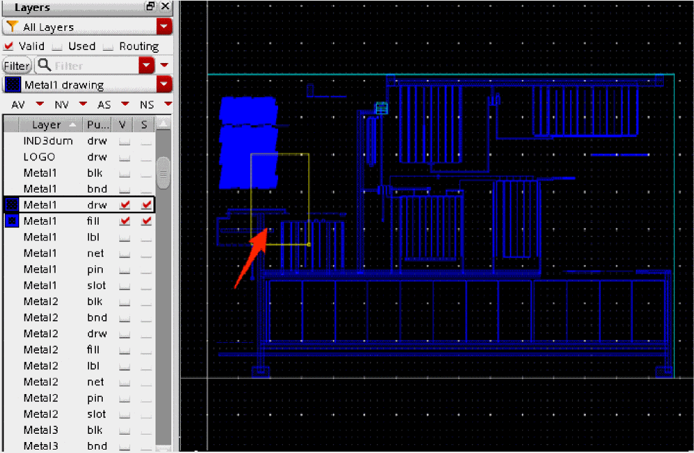 -
Once you do second click to define second point of rectangle, the Area field will be automatically populated with coordinates of the boundary box:
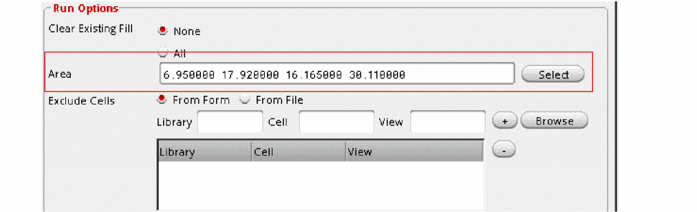 -
Click OK to close the form and run VIPVS signoff fill.
Dummy fills are generated for the specified area incrementally to already generated fills.
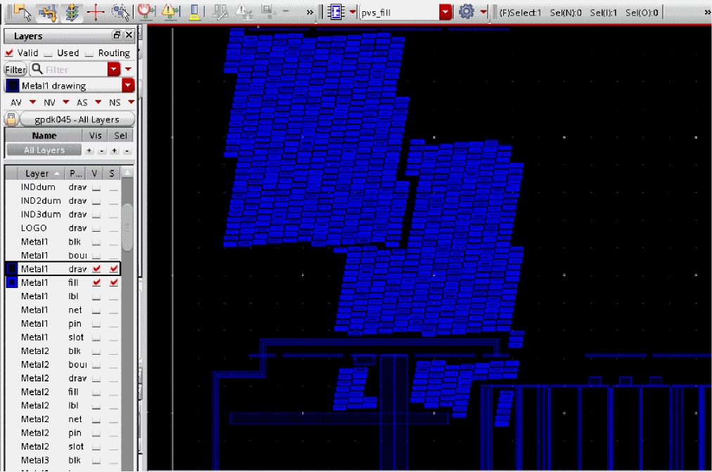
Return to top